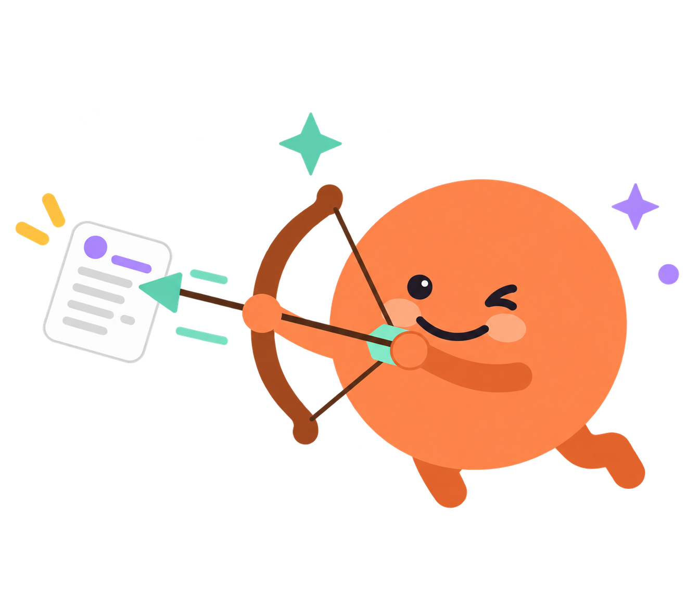

⚜ Hoş geldin, yolcu ⚜
CV'ni yükle, işini
Cupeer bulsun
7 farklı iş platformundan toplanan ilanlar, CV'ne göre akıllıca sıralanır.

3 Adımda CV'ne Uygun İş
Karmaşık bir kurulum gerektirmez; arama, veri toplama ve eşleştirme sürecini senin yerine otomatikleştirir.
Ara
İlanlar belirli bir pozisyon ve konum için taranır.
Topla
Yedi farklı platformdaki ilanlar otomatik olarak bir araya getirilir.
Eşleştir
CV'n yüklenir, sana en uygun pozisyonlar otomatik olarak sıralanır.
Neden Cupeer?
Kişisel iş aramanı hızlandıran özellikler.
7 Platform, Tek Ekran
LinkedIn, Indeed, Upwork, Kariyer.net, Eleman.net, Glassdoor ve RemoteOK'u tek yerden tara.
Akıllı Eşleştirme
CV'ni embedding modeliyle analiz edip en alakalı ilanları bulur.
Yeni İlanları Ekler
Her taramada yalnızca yeni ilanları ekler, süresi dolanları listeden gizler.
CV Danışmanlığı
CV'ni yapay zekaya incelet; ATS uyumluluğu ve somut gelişim önerileri al.
Hemen Dene
1. Yeni ilan çek
Canlı tarama ücretli bir servis kullandığı için yalnızca site sahibine açık. Aşağıdaki öneriler, veritabanında zaten kayıtlı ilanlar üzerinden çalışır.
2. Sana uygun ilanları bul
PDF'in metni, işlenmesi için Google Gemini'ye gönderilir; dosya ve metin sunucuda saklanmaz. Ayrıntılar
Sonuçlar
CV'ni yükleyip "Öner"e bastığında sana uygun ilanlar burada, uyum yüzdesiyle sıralı listelenir.
CV'ni İncele
CV'ni yükle, ATS uyumluluğu ve içerik etkisi açısından yapay zeka destekli bir değerlendirme al.
PDF'in metni, işlenmesi için Google Gemini'ye gönderilir; dosya ve metin sunucuda saklanmaz. Ayrıntılar
Hazine Sandığım
Sandığın henüz boş, yolcu. Sonuçlardaki kalp ikonuna basarak hazinene ekle.
Maceraya Hazır mısın?
CV'ni yükle, sana en uygun ilanları saniyeler içinde gör.
Maceraya Atıl →